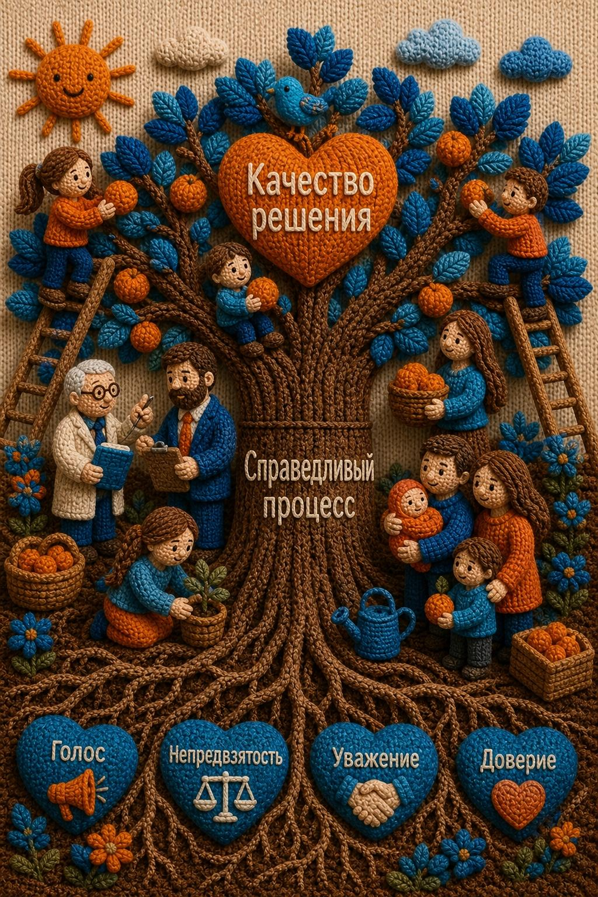
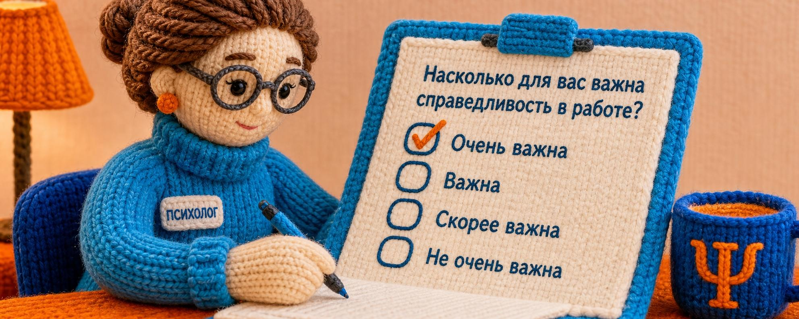

Исследование
Процедурная справедливость при совместном принятии решений
Как сделать социальную работу с детьми и семьями более справедливой?

В работе с семьями мы постоянно принимаем какие-то решения: сами лично, с коллегами или с клиентами. Но всегда ли мы понимаем, «как слово наше отзовётся»?
Мы проводим исследование, чтобы
- узнать, как клиенты (родители и подростки) и специалисты определяют для себя, что такое «справедливый процесс» принятия решения;
- разработать и апробировать инструменты для оценки справедливости в сфере помощи семьям и детям;
- выяснить, как переживаемая «справедливость» процесса влияет на воплощение принятых решений в жизнь.
Мы фокусируемся именно на процессах совместного принятия решений: сетевые встречи, семейные конференции, круги сообщества, семейная медиация, консилиумы с участием благополучателей, общие собрания клиентов, проживающих в кризисных центрах.
Мы верим: чувство «со мной обращаются справедливо» — важный фактор благополучия детей в трудной жизненной ситуации.
Опросники
Помогите исследованию: пройдите опросник сами и перешлите его коллегам или клиентам.

Опросник для родителей, подростков или молодых взрослых
Пожалуйста, поделитесь опросником со своими клиентами, у которых был опыт участия в процессах совместного принятия решений.

Опросник для специалистов о стиле работы, обеспечивающем справедливый процесс принятия решений
Пожалуйста, пройдите опросник и перешлите коллегам.
Хотите участвовать?
Если вы специалист или организация и вам близка тема — напишите нам, расскажем подробнее об участии в исследовании.
Поддержите «сеть поддержки»
Любое пожертвование помогает семьям удержаться на плаву и найти опору среди близких.